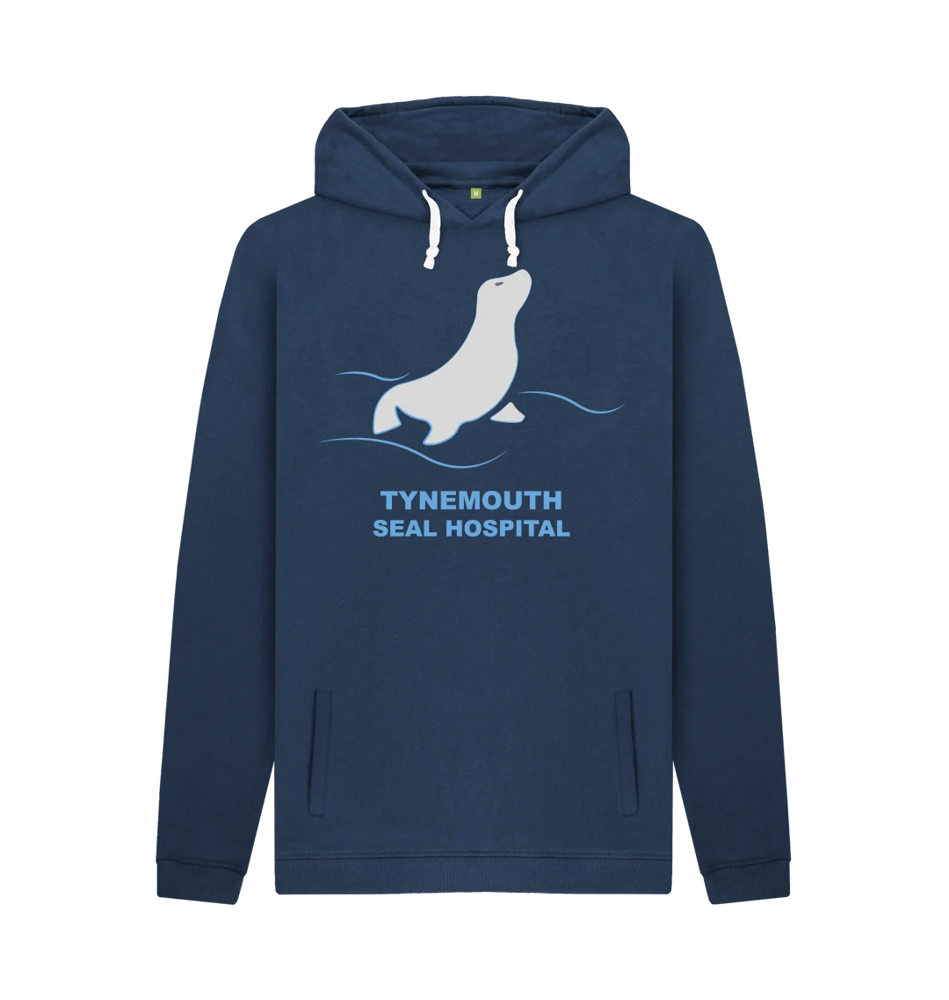
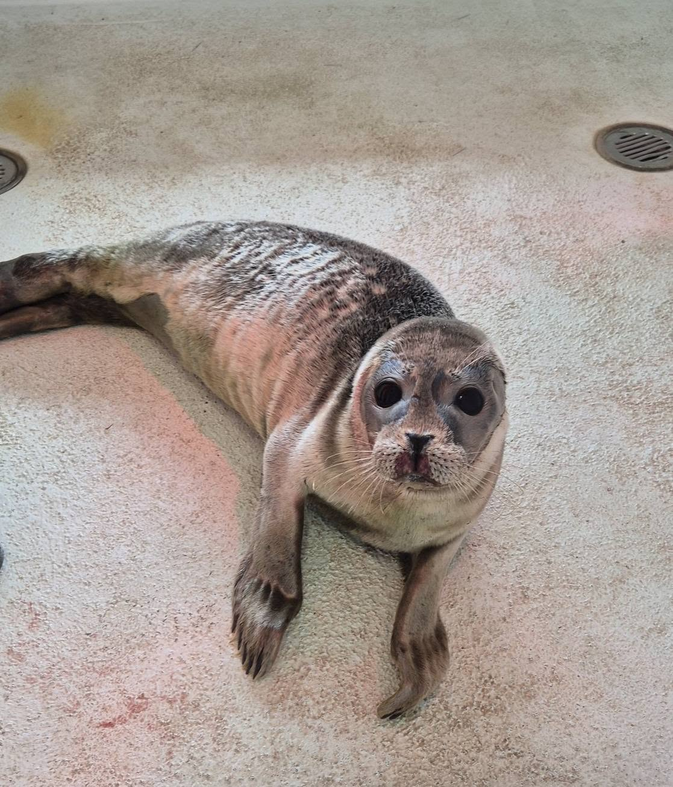
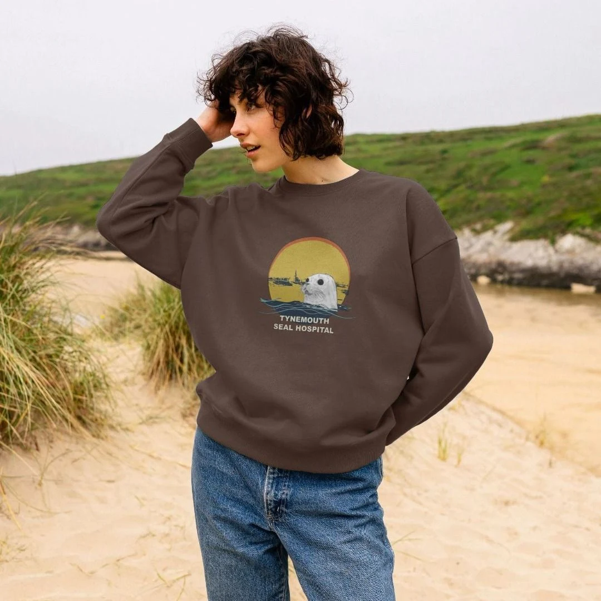
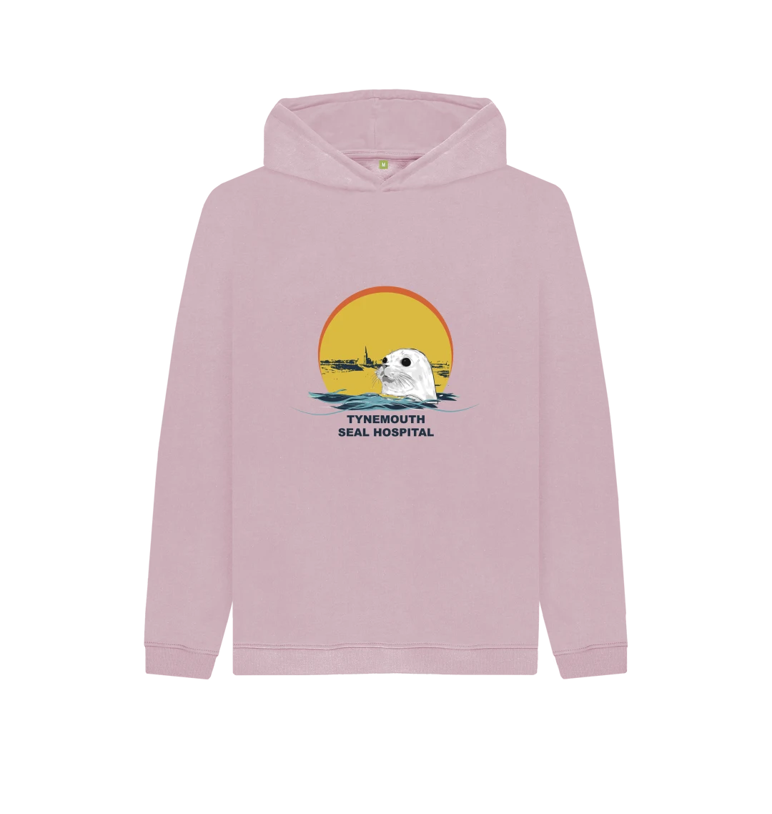
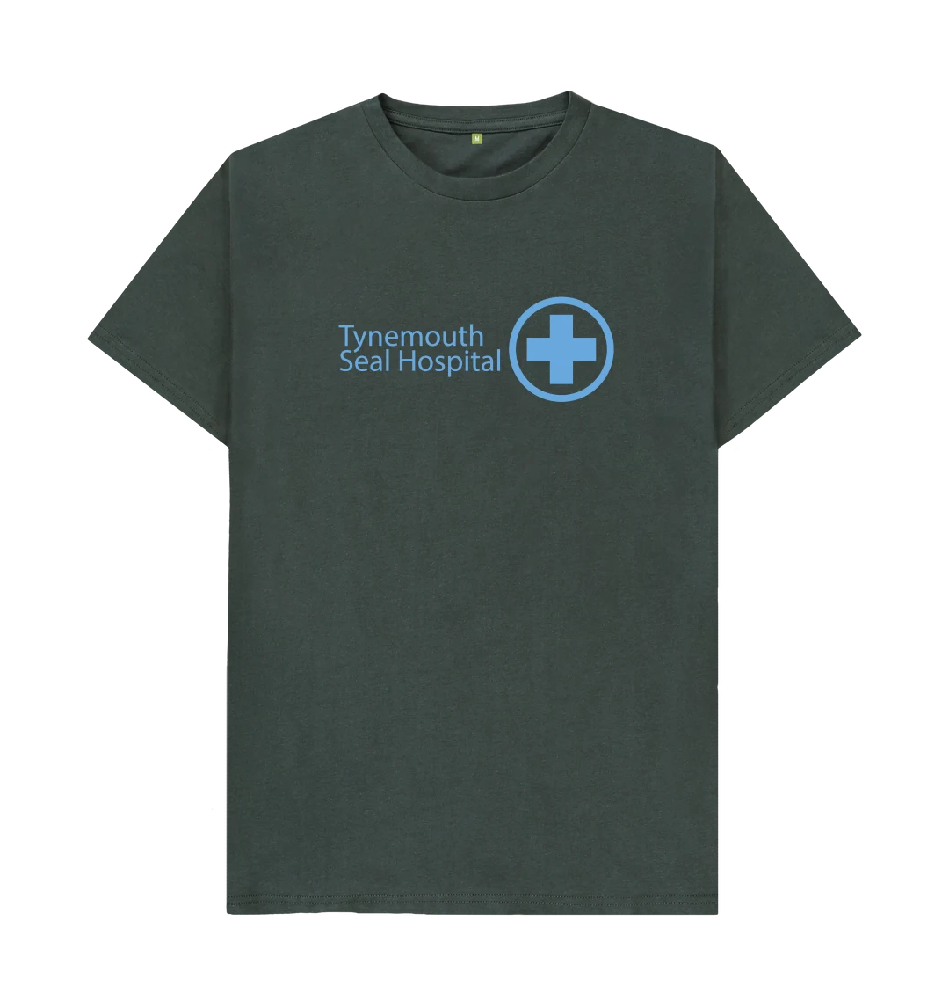
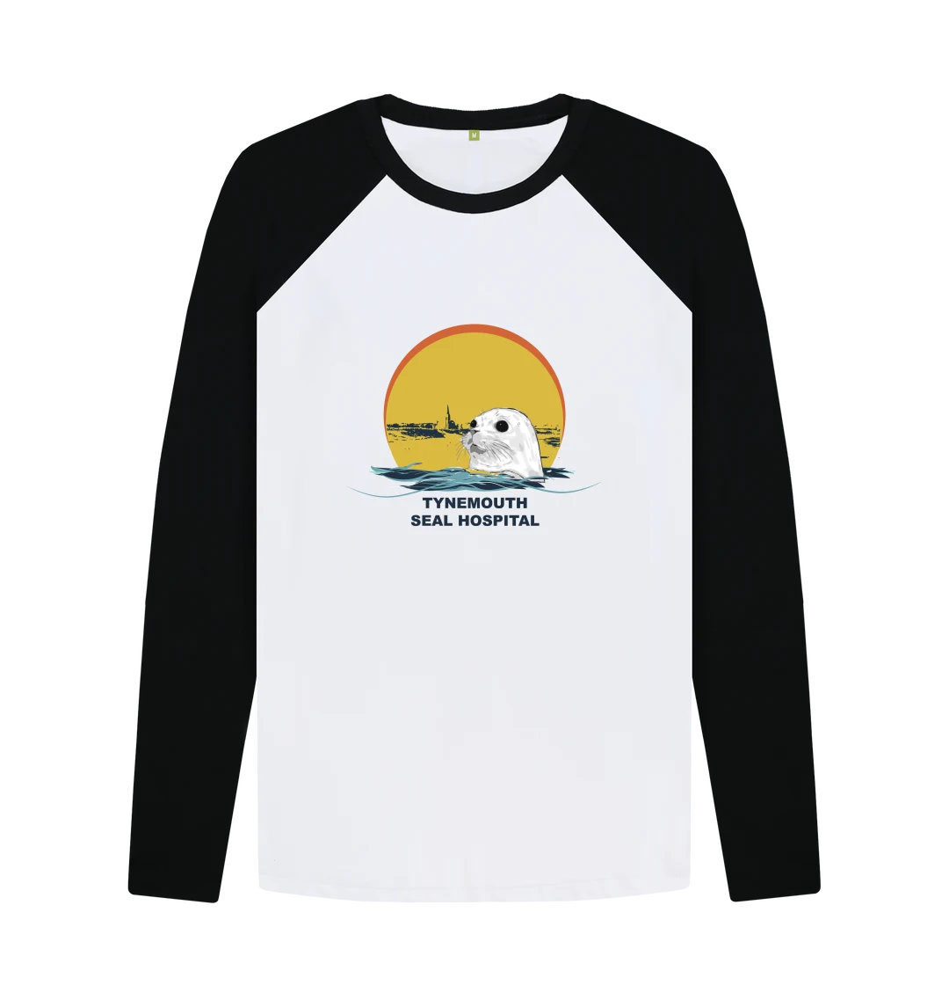
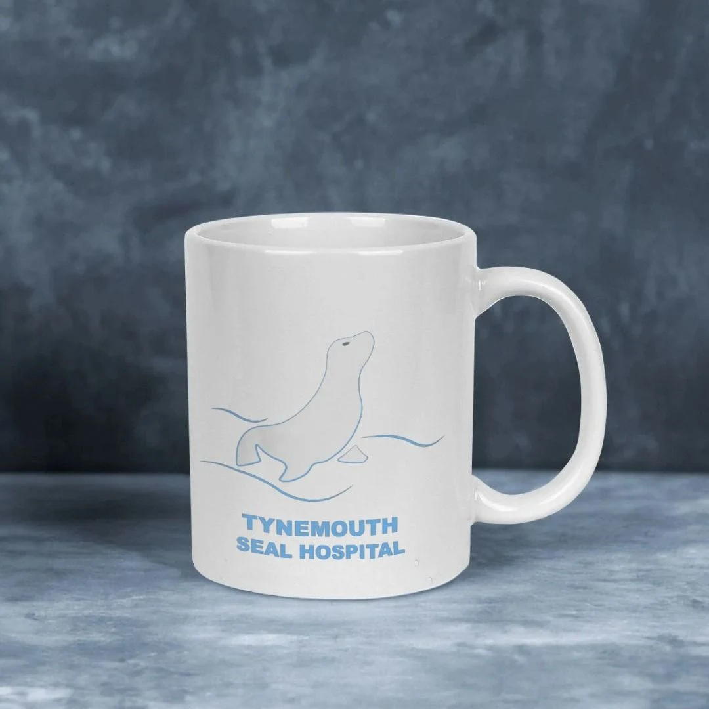
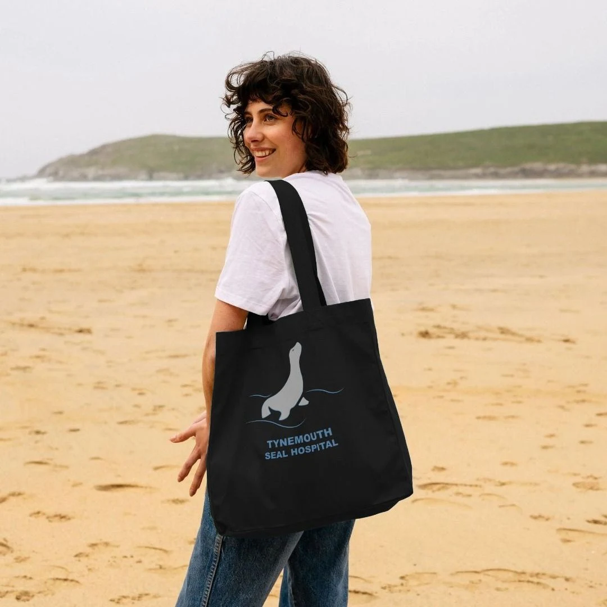
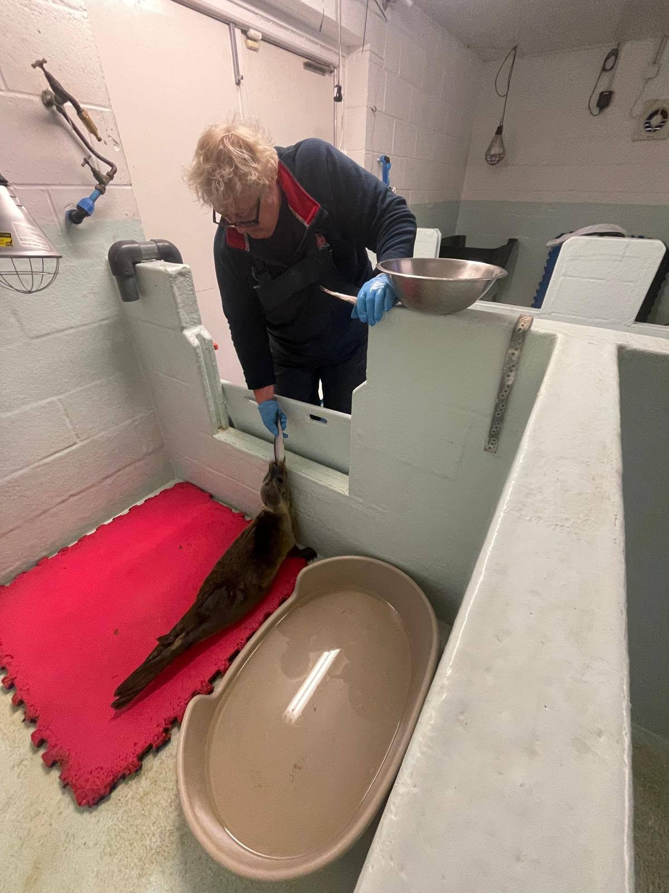

Support their next chapter
A little help.
A second chance.
Back to the sea.
Every rescued seal has a journey ahead. Help our volunteers provide the care, time and safe space they need to get ready for life in the wild.

Help us send them home
Their recovery starts
with people like you.
From the first days of care to the final swim back into the sea, your generosity supports the work of Tynemouth Seal Hospital.
- Support the daily care of sick, injured and vulnerable seals.
- Help keep the hospital equipped for rehabilitation.
- Give our volunteer team the support to keep going.
Make a difference today
A gift towards
a wild future
Choose an amount that works for you. Every contribution is appreciated.
Donate on JustGiving ↗Choose your donation amount and complete your payment on JustGiving.
Want to help regularly?
Visit our JustGiving page to see the regular giving options available.
Explore regular giving ↗Secure payments through JustGiving
Practical gifts. Everyday care.
Help stock the hospital
Supplies are another way to support our volunteers and patients. Our Amazon wishlist is the place to check the exact items currently requested.
The everyday essentials
Hospital care involves cleaning, feeding and keeping patients comfortable. These are examples of supplies used in animal care; please check our wishlist for the hospital’s current requests before buying.
- Cleaning essentialsSuitable cleaning products, brushes and other tools for keeping care spaces clean.
- Protective suppliesGloves and other consumables used during daily care.
- Care equipmentPractical items for feeding, cleaning and looking after recovering seals.
Needs and specifications change. Please choose the products and quantities shown on the wishlist, and check with the team before donating items that aren’t listed.
Wear your support. Share the love.
A little something for seal lovers
Explore the hospital’s Teemill shop for gifts and everyday favourites. Follow a collection to see its available designs, sizes and prices.

Women’s clothing
Discover hoodies and sweatshirts in the women’s collection.
Browse women’s clothing ↗
Children’s clothing
Seal-inspired clothing for our younger supporters.
Explore children’s clothing ↗Shop children’s tees ↗



Find your seal style
Explore all the latest collections in our Teemill shop.
Your idea. Their next chance.
Make it a fundraiser
Bring friends, family, classmates or colleagues together for our seals. Start with something you enjoy, set a goal and invite others to join in.
Bake for the seals
Host a bake sale or coffee morning. Bring your favourite recipes, invite your community and collect donations.
Walk, run or swim
Choose a sponsored distance that suits you, from a family walk to a running event or an organised swim.
Take on a challenge
Set a month-long movement goal, try a new skill or create a team challenge and ask people to sponsor your progress.
Make a day of it
Plan a school fun day, quiz night, craft sale or community get-together with donations supporting the hospital.
Celebrate with a gift
Ask for donations instead of birthday presents, or turn a special occasion into a collection for our seal patients.
Do it your way
Have your own idea? Tell the team what you have in mind and discuss how to make it work for the hospital.
Ready to get started?
Choose your idea, pick a date and set a fundraising target. Contact us to discuss your plans, then use our JustGiving charity page to explore fundraising options.
A little inspiration from past events
See how our community has brought people together. These are past events, shared for inspiration.
12 September 2026 · Past event
Family fun day at Roker Watch House
Dolphin Spotting NE’s fundraiser advertised face painting, a tombola, a children’s book sale and a talk about seal rehabilitation.
5–6 August 2023 · Past event
Seal Hospital pop-up
A hospital pop-up at the aquarium offered visitors a chance to talk with volunteers, learn about seal care and buy merchandise in support of the hospital.
Read the aquarium’s event listing ↗
Give your time
Be part of the team behind their recovery
Volunteering is rewarding, practical work. Behind every release are people helping keep the hospital clean, supporting daily routines and giving recovering seals the care they need.
- Cleaning pens, equipment and care areas.
- Helping with food preparation and feeding routines as directed by the team.
- Following the team’s instructions and helping with day-to-day hospital tasks.
- Supporting fundraising events and sharing awareness of our work.
Tasks depend on the role, your experience and the team’s needs. It takes reliability, teamwork and a willingness to get stuck in — including the less glamorous jobs!
Contact us to ask about current opportunities, training, time commitments and any role requirements.
Your business can make a difference
Support equipment, care and future projects
Bring your business’s skills, resources or fundraising energy to a conversation about what the hospital needs most.
Discuss corporate support
Tell us about your organisation and how you would like to help.
A small share can travel a long way
Help more people meet our seals
Share the website, a recovery story or our awareness posters. Every conversation is a chance to introduce someone to the hospital.
{kind=link}
{kind=link}
From all of us at the hospital
Thank you for being part of their story.
Every gift, kind gesture and shared story helps more people discover our work.